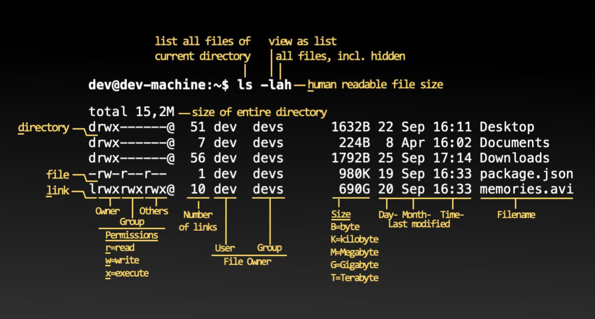

Cody's Linux Blog
 Tried using jeykll on Arch linux to make a static page for github pages (here). What a pain in the ass with version incompatibilities. Guess I'd have to learn Ruby for having jekyll be a reasonablly useful platform. If I was going to learn a second scripting language, I would think possibly python, or skip scripting languagea all together and move onto a compiled language. I'm trying the abricotine markdown editor as a test. Seems spell check is obviously not working.
Getting off to a really bad start with this markdown editor! The top menu disapeared as I was trying to explore... and this thing did a vim 'fuck you newb' on me! I'm off to check out alternatives that can spellcheck and don't have a vim trap built in!
Straight up markdown is going to work great for what I had in mind. Just need to find an editor I get along with...
This is a bit of recent code I wrote for aurch, cause, you know, I want to check how code looks. This checks the host for AUR updates.
readarray -t aurpkgs < <(pacman -Sl ${REPONAME} 2>/dev/null | awk '{print $2,$3}' ; pacman -Qm )
if [[ $1 == -Luhq ]]; then :
else
echo; echo "${czm} Checking for updates:"
printf '%s\n' "${aurpkgs[@]%' '*}" | nl | column -t
fi
rm -f /tmp/aurch-updates /tmp/aurch-updates-newer
for pkg in "${aurpkgs[@]}"; do {
pckg="${pkg%' '*}"
check=$(curl --compressed -s "https://aur.archlinux.org/rpc/?v=5\&type=info&arg\[\]=${pckg}" \
| jshon -e results -a -e Version \
| awk -F\" '{print $2}')
compare=$(vercmp "${pkg#*' '}" "${check}")
if [[ -n ${check} && ${compare} == -1 ]]; then
echo "${pkg} -> ${check}" >>/tmp/aurch-updates
elif [[ -n ${check} && ${compare} == 1 ]]; then
echo "${pkg} <- ${check}" >>/tmp/aurch-updates-newer
fi } &
done; wait
if [[ $1 == -Luhq ]]; then
awk '{print $1}' /tmp/aurch-updates
else
echo; echo "${czm} Updates available:"
column -t /tmp/aurch-updates
echo
if [[ -s /tmp/aurch-updates-newer ]]; then
echo " Newer than update:"
column -t /tmp/aurch-updates-newer
echo
fi
fi